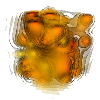
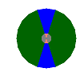

| Test Case | Errors | Images | |||
| %Diffs | Maximum | Baseline | Current | Diff Map | |
| Testing setting of multiColor in Boundary plot | |||||
| multicolor_0_00 | 90000.00 | 0.00 | |||
| multicolor_0_01 | 90000.00 | 0.00 | |||
| multicolor_0_02 | 0 modifications totalling 0 lines | ||||
| multicolor_0_03 | 90000.00 | 0.00 | |||
| multicolor_0_04 | 0 modifications totalling 0 lines | ||||
| multicolor_0_05 | 90000.00 | 0.00 | |||
| multicolor_0_06 | 0 modifications totalling 0 lines | ||||
| Testing setting of multiColor in Contour plot | |||||
| multicolor_1_00 | 90000.00 | 0.00 | |||
| multicolor_1_01 | 90000.00 | 0.00 | |||
| multicolor_1_02 | 0 modifications totalling 0 lines | ||||
| multicolor_1_03 | 90000.00 | 0.00 | |||
| multicolor_1_04 | 0 modifications totalling 0 lines | ||||
| multicolor_1_05 | 90000.00 | 0.00 |  | ||
| multicolor_1_06 | 0 modifications totalling 0 lines | ||||
| Testing setting of multiColor in FilledBoundary plot | |||||
| multicolor_2_00 | 90000.00 | 0.00 | |||
| multicolor_2_01 | 90000.00 | 0.00 | |||
| multicolor_2_02 | 0 modifications totalling 0 lines | ||||
| multicolor_2_03 | 90000.00 | 0.00 | |||
| multicolor_2_04 | 0 modifications totalling 0 lines | ||||
| multicolor_2_05 | 90000.00 | 0.00 | |||
| multicolor_2_06 | 0 modifications totalling 0 lines | ||||
| Testing setting of multiColor in Subset plot | |||||
| multicolor_3_00 | 90000.00 | 0.00 | |||
| multicolor_3_01 | 90000.00 | 0.00 | |||
| multicolor_3_02 | 0 modifications totalling 0 lines | ||||
| multicolor_3_03 | 90000.00 | 0.00 | |||
| multicolor_3_04 | 0 modifications totalling 0 lines | ||||
| multicolor_3_05 | 90000.00 | 0.00 | |||
| multicolor_3_06 | 0 modifications totalling 0 lines | ||||
| Testing user defined colors for FilledBoundary | |||||
| multicolor_matcolors | 90000.00 | 0.00 |  | ||
Final Return Code: 111
{kind=link}
{kind=link}
{kind=link}
{kind=link}
{kind=link}
{kind=link}
{kind=link}
{kind=link}
{kind=link}
{kind=link}
{kind=link}
{kind=link}
{kind=link}
{kind=link}
{kind=link}
{kind=link}
{kind=link}